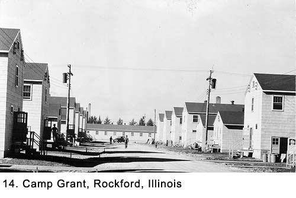
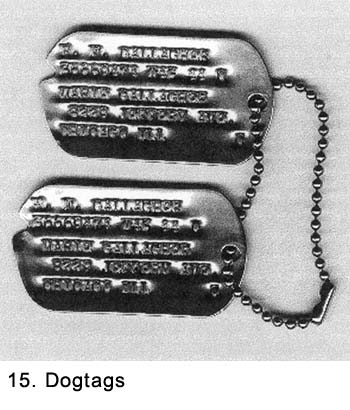
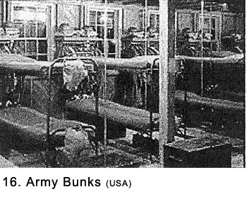

|
Table of Contents < - - - return Chapter 3 < - - - next
World War II Story by Robert F. Gallagher Chapter 2 - Drafted No matter under what circumstances you leave it, home does not cease to be home. No matter how you lived there - well or poorly. Joseph Brodsky _______________________ In early June, 1943, my number came up, and I was notified that I had been "selected" - an euphemism for "drafted" - to serve in the military services. Knowing that I was finally going was more a relief than anything else. I had been ready for a long time and the act of doing it just seemed routine. Routine! There would be nothing routine about what I was about to experience for the better part of the next three years of my life.  On June 22nd, I said good-bye to my mother, sister Joan, and younger brother Bill at home. My father drove me to the local draft board at 79th Street and Exchange Avenue at 0600 hours. He kissed me on the cheek as he said good-bye. There were tears in his eyes. It was the only time that he kissed me as an adult. He had been in the Navy during World War I and he knew better than I what I was getting into. My mother had not come with us so she could do her crying out of sight. I realized these good-byes meant the end of everything important to me. There would be no more participation in the things I had learned to enjoy in civilian life. But it was not something I dwelled on. It never occurred to me I would not return when the war was over to enjoy them all again, even though I had no good reason for being that optimistic. Like all young people then, now, and forever, the thought of dying was not something that worried me, even when entering military service during a worldwide war. I thought I was invincible and I had complete faith in my destiny. Others more knowledgeable might have viewed my optimism more harshly. Ignorance is bliss. We potential recruits stood on the sidewalk outside the draft board and talked about what was going to happen to us. Everyone tried to put on the best face they could, but there was an underlying feeling of unrest. We never entered the building. A civilian showed up in about an hour and checked off the names of all who were there. Then busses arrived; we were loaded aboard and driven to a building downtown in the Chicago Loop. It was there we had our physical examinations. The first order of the day was for everyone to strip down to his shorts. We were all in one big room on the second floor of the building. There were long lines snaking around for each test. After completing a test, we moved to the line for the next one. The temperature in the room was in the nineties and the body odor in some areas was formidable. There was no air conditioning, the open windows only let in heat and noise. The building backed up to Van Buren Street, one of the busier streets in the Loop and the elevated trains ("L") ran right past the uncovered windows. The "L" made a lot of the noise, and the passengers saw more nudity than a busy nudist camp. We were fingerprinted. We gave blood and urine; then were examined thoroughly. We were told to get into the most embarrassing positions to be examined by flashlight. At this point, we had abandoned the shorts, and it was all done while stark naked in front of hundreds of others who were similarly exposed. The whole process was intimidating. After dressing, we lined up in front of desks to be interrogated by psychiatrists. At least, they said they were psychiatrists. Some of them looked so bored we expected them to drop their heads and fall into a deep sleep. The questions they asked me were not new to me; they had been repeated many times by men in our neighborhood who had preceded me into service. When the psychiatrist asked, "Do you like girls?" I passed up an opportunity to spend the war as a civilian. The story about one of the neighborhood eccentrics who was asked this question became an urban legend. His reply was simply, "No, and they don't like me either." It kept him out of the service, and we all kidded about using the line ourselves. However, I really didn't want to be a civilian, and I answered "yes." In my neighborhood, to claim you didn't like girls was asking for more grief than being in the service could ever afford. In addition to peer pressure from my friends, more than a little of my own pride was involved. The thing that was foremost on my mind was to fulfill my dream of becoming a pilot, and I could only do that by going into service. We were tested for about three hours; most of the time was spent waiting in lines. The waiting was an introduction to what we would do hundreds of times in the future. Near the end, they asked us which branch of the service we wanted, Army or Navy. I said Army, but for some reason, they stamped my papers "Navy." I didn't notice it at the time. Some men were rejected; given the draft classification of 4-F and sent home. The rest of us were separated by branch of service prior to being sworn in. Only then did I notice what was stamped on my application form. I immediately went back, and with some difficulty, had myself reassigned to the Army. I came very close to spending my military time in the Navy. We were bussed to Camp Grant, near Rockford, Illinois (See Fig. 14), a camp set up to process new recruits. We were taken to a warehouse where we exchanged our civilian clothes for Army uniforms. We had been told to wear old clothes to the induction center because, if we were accepted, the civilian clothes would not be returned. Because the weather was warm, we dressed in our new Government-issued khaki uniforms and wore them around the camp. We were also issued one set of wool olive drab (OD) uniforms and a set of fatigues. It was good that we did not have to wear the wool uniform immediately because it reeked of mothballs. The khakis were stiff, in most cases ill fitting, and they had a shine to them. They made us look like the raw recruits we were. As we looked around at the noncoms attached to the camp with their tailored uniforms adorned with chevrons, brightly colored shoulder patches on the sleeves of their shirts, and campaign ribbons across their chest, we felt completely ungarnished. We were anxious to get our khakis washed to remove the shine and to get some kind of shoulder patch sewn on our sleeve so we would look more like seasoned soldiers. We were issued two metal identification tags (See Fig. 15) called dog tags, with some basic information on them. Mine included my army identification number (36669474), my blood type (O), and a "C" that indicated I was Catholic. The tags were primarily for identification in case I was killed or wounded. For the duration of my time in the service, I wore these tags every day and night attached to a chain around my neck. We signed up for a free $10,000 life insurance policy to be paid in case of death while in service. I named my mother as beneficiary; her name also appeared on my dog tags. When we first got to camp, we were greeted by soldiers who had been in the army a short time, probably a day or two. They shouted at us in unison, "You'll be sorry!" or "Suckers!" We did the same thing after we had donned our new uniforms and were marched past the latest recruits stepping off their buses in civilian clothes. We lived in white two-story wooden barracks. Each building was exactly the same as the next, and they were even spaced the same distance apart. The only way to differentiate one from another was to check the small number stenciled over the outside doors. Inside, double-decked bunk beds about five feet apart lining each side of an aisle on both floors. At the foot of each bunk was a footlocker for our clothing (See Fig. 16). There was not a picture on the wall, rug on the floor, curtain on a window, a chair to sit on, a piece of furniture other than the metal bunk beds, or even a light fixture covering the bare light bulbs. The barracks had the antiseptic look of some futuristic testing lab; the sameness made everything look amazingly clean. We were to find out cleanliness was a by-product of what was at play here. The sterile look was primarily to encourage conformity; comfort and beauty were not considerations. The emphasis on conformity was about to become a major factor in our lives. At the ends of the buildings were the latrines and individual quarters for the noncoms (noncommissioned officers) who were about to give us a taste of what army life was going to be like. We were marched to an in-camp barbershop and given army haircuts. It was a high-production operation with about twenty chairs and civilian barbers lined up in one row. My barber had a lit cigarette dangling from his lips through most of the time I was in the chair and he made no effort to turn when he blew out the smoke. The rumor was the Army was paying him on piecework. We learned not to specify how we wanted our hair cut. There was only one way, the Army way. The barbers ran the clippers up the sides of our heads and then chopped away the hair on top. The resulting bad haircuts added to our image as a bunch of raw recruits. Along with the new uniforms, we were being molded into the conformity of military fashion. I drew KP (kitchen police) duty and spent a whole day doing menial jobs in the kitchen. I peeled potatoes, served meals, scrubbed tables, mopped floors, and washed dishes. The duty lasted from sun up to sun down. They kept us busy every minute of the time and it was hot as blazes in the mess hall. The mess sergeant referred to us KPs as "you boys," and we noticed his efficiency in being right there whenever we completed one task so that he could be ready to assign the next one. The only breaks came when we were eating, and we had hardly been seated when the sergeant bellowed, "You're not civilians anymore so get a move on." Near the end of the day, I was cleaning up the large pots and pans with another guy. The soapy water was laden with food particles, and was not doing a good job of cutting the grease despite the stiff GI brush I used. Even the rinse water was anything but clear. My fatigues were soaked from a combination of sweat and wash water. I was feeling very sorry for myself, thinking this pots-and-pans detail was the worst job in the kitchen. Then I noticed what was going on behind the sinks where the grease traps were being cleaned. This KP job made all the other duties seem like a picnic in the park. Usually two men were assigned to it and the work was guaranteed to make at least one lose his dinner. Fortunately, I was not selected, but the foul odor wafting throughout the mess hall just about gagged all the rest of us. Later, while doing the final clean up for the day, another fellow and myself were told to take a garbage can full of waste outside. As we walked out of the mess hall door carrying the can, we came across one of the men who had been on grease trap duty sitting on the wooden steps. His face was as white as a sheet. He shuffled over to the side of the step to let us pass but did not look up at us. The fatigue cap on his head was being pulled down with both of his hands in some gesture of rage. The front of his uniform was soiled with vomit. I really felt sorry for him but I did not know what to say. I was learning that army life was not going to be fun, and I learned one lesson I never forgot: when it's time to cleaning the grease traps while on KP, be sure you are busy doing something else. No matter how bad the job is you have, it is not nearly as bad as ladling out stinking sewerage from a grease trap. I returned to my barracks that evening, where I had just enough time for a badly needed shower before lights out. I collapsed onto my bunk and fell asleep as soon as my head hit the pillow. The next day it was up early for more instruction classes. Later, we had to scrub the barracks floor on our hands and knees. The floor had been scrubbed so many times it was bleached almost white. Then the noncoms took us out on the street, lined us up in rows, and tried to teach us a few basics about formations, saluting, and marching. We learned how to snap to attention on command, assume a sober looking face, and listen closely to the commands. As simple as it all was, it was comical to see how some men found it so difficult to follow basic instructions like stand in a straight line. While at this location, I developed a toothache and got permission to go and see the camp's dentist. He told me I had two cavities and he proceeded to drill them out without giving me any Novocain. The pain was severe and I clutched the arms of the chair and muffled my moans as best I could. The dentist proceeded as if it was all in a day's work. When the drilling was completed, he filled the two teeth and announced he was through. Thinking that he meant he was through for the day, I asked him when I was to return. He replied, "Never." When I had a tooth filled in civilian life it took three or four visits to the dentist. I was learning the Army did everything different, including filling teeth. We did a lot of marching in formation around the camp, partially to give us exercise but also to familiarize us with basic military commands. We thought we were improving, but judging from the complaints of the buck sergeant (three stripes) who was drilling us, we weren't. Part of our day was spent in classroom instruction on various subjects, and we were shown several films about the Army. These films seemed to be an attempt to blend us into our new lifestyle but, as we learned later, they were more likely written by someone from Hollywood who had never worn a uniform. One of them was so old it well might have been left over from World War I. More inspections were made both in and out of the barracks. There was a lot of picking at our uniforms by the sergeants. Caps were adjusted to a certain angle, the bottom half of ties were moved to fit between two specific shirt buttons, belts were redone, and shoes were never polished enough. Basics like the hand salute were rehearsed over and over again with a sergeant going down each line of soldiers making adjustments to our arms position. While in formation, lines were straightened and men were told to stand up straight, tuck their chins in, look straight ahead, and keep their mouth closed. The sergeant would yell out, "You're catching flies!" While we had heard induction centers like this made an effort to match up the civilian occupation or skills with matching jobs in the army, I saw no sign of this. From my perspective, they were taking all the men who came into camp and sending them out to places where they were needed to fill quotas. After a few more days, we were notified we were ready to ship out. My entire barracks and the men from several others were formed into ranks in the street. With our limited amount of gear in tow, we were marched for several blocks to a railroad depot at one end of the camp. At that period in history, the country was awash in streamlined trains introduced about ten years earlier. Many of them had exciting names like Zephyr, The Super Chief, Hiawatha, and El Capitan. They were usually advertised as being extra fine and extra fast. With their sleek engines, stainless steel passenger cars with brightly colored logos, large picture windows, and modern interiors, they were setting new standards for speed and luxury in rail transportation. They were air conditioned and often fitted with the newer diesel engines. But, the job of shipping soldiers, especially raw recruits, was delegated to an old steam engine and even older passenger cars. That's what was sitting on the tracks at the depot. The cars were painted black and with their riveted bodies resembling odd-shaped boilers and clerestory roofs, they definitely had the look of an earlier era. We boarded the train as our names were checked off a roster. Inside was no improvement over the outside, and it was obvious they were not air-conditioned. The cars had been sitting out in the sun for a long time and were stifling hot. We all headed to the windows to get some fresh air; it took two men to open each one. The interior dark green cloth-covered seats that had seen better days, a well scuffed-up floor without a trace of carpeting, and walls painted a dirty yellow. It was nothing more than basic transportation. We were in what was known as day coach, or simply coach, with sitting accommodations for day and night use. One of the men in our group commented, "You've heard about first class and second class accommodations, well, welcome to last class." Selecting a seat involved picking out someone we had made friends with just a few days before. We sat two abreast facing two other men. The train chugged out of camp, picking up speed as we headed west. I had never traveled farther than Joliet, Illinois, which was about thirty miles from my home, so at first the trip was quite exciting. In western Illinois, we passed through small towns that were visible only for a fleeting glance. The small wooden houses and the one-block long string of stores in their business districts were past before we could make out any discernible features. Some of the towns had a depot, and occasionally we caught a glimpse of someone waving, usually a child, as we rolled through at top speed. We heard the repetitive sound of bells clanging as we passed roadways with cars waiting for us to pass. We became so accustomed to the engine shrieking, whistle blowing, swaying movement of the cars, and steady clickity-clack of the wheels hitting the cracks in the rails we no longer noticed it. Our interest in seeing the sights soon waned, and our attention turned back inside the train. There we picked up a one-on-one relationship with our new friend. Most of the conversation started with a question. "Where you from?" "Where's Manitowoc?" "Have you ever been to Chicago?" "Where do you think we're going?" It was reassuring to find the guy next to you sounded a lot like your civilian friends. With no history to share, however, much of our conversation was used up early. We went back to staring out the windows at the scenery, each man wrapped up in his own thoughts. The mood in the car ran from periods of merriment with someone telling jokes or acting up, to times of routine conversations, to moments of quiet reflection. Next came Iowa with its many farms and fewer towns. The scattered farmhouses with red barns, windmills, and silos all had a sameness about them. There were many animals, continuous fences, and acre after acre of crops that to a city kid like me, all looked alike. A constant sight was the miles of telephone wires and poles. One of the men on board said he knew how many feet the poles were spaced apart so, using the second hand on his watch, he tried to figure out how fast the train was going. Somehow, it didn't work out right, and he seemed embarrassed to have brought up the subject. We passed rivers both big and small. Crossing over bridges and trestles accentuated the train's noises, and always drew the men's attention to the windows to see what was going on. We stopped at the depot of a small town to pick up water for the engine. The few people about paid us no attention. America had been at war about a year and a half, and troop trains were as common as a freight train. A couple of young ladies walked along the platform causing most of the trains occupants to move to the one side of the car to get a better look. The men commented and the girls smiled graciously. Back on the move, Iowa's flat farmland was beginning to be boring. As we continued west, there was much debate as to what route we were taking. Were we in Missouri or Nebraska? Whichever it was, the landscape continued to be amazingly flat with open prairies that seemed to be used for nothing except occasional grazing land. Signs on local water tanks identifying the name of the town were unfamiliar to us and gave no help in determining where we were. Gone were the green crops of Illinois and Iowa. Then towns and farms became less frequent. The roadside gates with their clanging bells took on the added sight of flashing red lights when the sun went down. At night, we made every effort to find a comfortable position to sleep while sitting up. Men would twist their bodies into distorted positions trying to get comfortable. We took our shoes off and slept in our khaki uniforms. Unfortunately, I was not one of the first to fall asleep, and then it became a challenge to do so because of the loud snoring, heavy breathing and indescribable noises some men were making in their sleep. I had never heard anything like it in my life, not even during those nights in Camp Grant. Finally, I dozed off and after a restless night sleep, awakened to a beautiful sunrise over the plains. All of us had been assigned numbers for our trips to the diner, and we took turns eating by groups. The food was very good, and we kidded about getting the cooks who worked for the railroad to come with us into the Army. The waiters wore heavily starched white jackets and their ability to work efficiently despite the movement of the car amazed us. There was no time to laze around the diner and although it was not air-conditioned, the white linen tablecloths, uniformed waiters, and overall neatness greatly exceeded our coaches in style. We had to eat in a hurry and get out of there to make room for the next shift. Without air conditioning, the train's windows were open during the entire trip to let in the outside air. They also let in smoke, cinders, and grime from the churning coal-burning steam engine that pulled the train, especially later when it would labor to make the steep grades in the mountains. We acquired a heavy layer of soot. By the time we reached Denver, we began to feel relaxed with our new acquaintances and the trip began to take on the feeling of an adventure. There were all kinds of personalities. There was the funny guy with the jokes, the big talker, the one who boasted, the one who said nothing, the fellow who already had the Army all figured out, the one you knew would never be a friend, the guy who checked the picture of his wife in his wallet on a regular basis, and, mostly, just a bunch of men trying to be sociable. Some poker games broke out. One guy tried with no luck to get a crap game going by rattling dice in his hand. He looked like he was too eager to play, and he too closely resembled a con man from a cheap carnival. A fellow sitting across from me said, "Keep away from that guy," but never explained what he meant. I made some friends on the train with whom I would spend the rest of my time in the army. We had a long layover in the rail yards of Denver but, in what would become a familiar pattern, nobody offered an explanation why. Most of the time there was spent lounging around our railcar playing cards, reading, and talking. Being stuck in one confined location soon became monotonous. We were learning about that phase of military life that was always amplified because of our restricted movement. Finally, without any notice, the train lurched forward, and we were on our way again. Things became more scenic as we moved into the mountains of western Colorado. This was another first for me. We were also beginning to appreciate the variations of the different parts of the country and the magnitude of it all. After the Colorado mountains, we made our way through the desolate-looking states of Utah and Nevada before reaching California. When we reached the San Gabriel Mountains, we picked up a high-powered steam locomotive to pull the train up the Cajon run to the summit. The laboring engine gave us an extra dose of soot and cinders through the windows on the way. The train coasted down the mountains into San Bernardino and made the short run to our final destination. We had been on the train for almost sixty hours, and we were hot, tired, and extremely dirty. At the time, we still had no idea where we were specifically or what branch of the Army we would be assigned to. There were many rumors floating throughout the rail cars, and, as we would learn many times in the future, they were all wrong. There was a strong sense of anticipation and some nervousness among us as we sat there waiting to unload. We knew this new camp would determine the type of training, assignment, and even lifestyle we would experience for some time to come, if not for the duration of the war. Were we to be infantry and be immediately sent overseas as replacements for those killed in action? Would we be lucky and be assigned to the Army Air Corps where life would be a lot more pleasant? Was it some type of unit we knew nothing about but might be interesting and perhaps offer some kind of a challenge? These were the questions we discussed among ourselves as we waited to unload. Our future in the military was hanging on what we would learn in the next few hours. Chapter 3 < - - - next Table of Contents < - - - return _________________________ Footnotes and Source of Photographs. Copyright, Robert F. Gallagher, 1999 - 2015, all rights reserved on all images and content.
|